Chapter 6 Rstudio and some useful packages 2 - ggplot2
2017-05-10 한성필 전공의 강의
9주차 강의 자료입니다.
Rstudio는 R을 좀더 편리하고 풍부하게 사용하기 위한 도구로서 가장 널리 사용되고 있는 IDE입니다. https://www.rstudio.com/products/rstudio/download 에서 가장 최신의 Rstudio를 다운로드 받을 수 있습니다. Windows, MacOS, Devian/Redhat Linux 중 운영체제에 맞는 것을 설치하면 됩니다.
아울러 이번 강의 에서는 ggplot2의 사용법을 예제를 통해 알아보겠습니다. (Wickham and Chang 2016) https://rpubs.com/kimwoohyung/ggplot2의 자료를 많이 참고하였습니다. https://rpubs.com/mccannecology/53464도 좋은 자료입니다.
library(ggplot2)
library(gcookbook)## Error in library(gcookbook): there is no package called 'gcookbook'library(plyr)
library(reshape2)6.1 Part1
tophit <- tophitters2001[1:25,]## Error in eval(expr, envir, enclos): 객체 'tophitters2001'를 찾을 수 없습니다tophit <- tophit[,c("name", "lg", "avg")]## Error in eval(expr, envir, enclos): 객체 'tophit'를 찾을 수 없습니다# y축 이산형 그래프
ggplot(tophit, aes(x = avg, y = name, col=lg)) + geom_point()## Error in ggplot(tophit, aes(x = avg, y = name, col = lg)): 객체 'tophit'를 찾을 수 없습니다# 그래프 정렬하기 & 그래프 격자 없애기 & 수평선 점선으로 바꾸기
ggplot(tophit, aes(x = avg, y = reorder(name, avg))) + geom_point(size = 3) + theme_bw() +
theme(panel.grid.major.x = element_blank(),
panel.grid.minor.x = element_blank(),
panel.grid.major.y = element_line(color = "grey60", linetype = "dashed"))## Error in ggplot(tophit, aes(x = avg, y = reorder(name, avg))): 객체 'tophit'를 찾을 수 없습니다# x, y축 바꿔서 그치기 & 그래프 격자 없애기 & 수직선 점선으로 바꾸기 & X축 값 정의 및 회전
ggplot(tophit, aes(x = reorder(name, avg), y = avg)) + geom_point(size = 3) + theme_bw() +
theme(axis.text.x = element_text(angle = 60, hjust = 1),
panel.grid.major.y = element_blank(),
panel.grid.minor.y = element_blank(),
panel.grid.major.x = element_line(color = "grey60", linetype = "dashed"))## Error in ggplot(tophit, aes(x = reorder(name, avg), y = avg)): 객체 'tophit'를 찾을 수 없습니다# 두개 변수로 정의하여 그리기
nameorder <- tophit$name[order(tophit$lg, tophit$avg)]## Error in eval(expr, envir, enclos): 객체 'tophit'를 찾을 수 없습니다tophit$name <- factor(tophit$name, levels = nameorder)## Error in factor(tophit$name, levels = nameorder): 객체 'tophit'를 찾을 수 없습니다# 격자 선이 그래프의 끝에서 끝까지 횡단하지 않고, 점까지만 가도록 표현 [ geom_segment ]
ggplot(tophit, aes(x = avg, y = name)) +
geom_segment(aes(yend = name), xend = 0, color = "grey50") + geom_point(size = 3, aes(color = lg)) +
scale_color_brewer(palette = "Set1", limits = c("NL", "AL")) + theme_bw() +
theme(panel.grid.major.y = element_blank(), legend.position = c(1, 0.55), # 범례를 그래프 안쪽으로 옮김
legend.justification = c(1, 0.5))## Error in ggplot(tophit, aes(x = avg, y = name)): 객체 'tophit'를 찾을 수 없습니다# 그룹 별 그래프 분할
ggplot(tophit, aes(x = avg, y = name)) +
geom_segment(aes(yend = name), xend = 0, color = "grey50") + geom_point(size = 5, aes(color = lg)) +
scale_color_brewer(palette = "Set1", limits = c("NL", "AL"), guide = FALSE) + theme_bw() +
theme(panel.grid.major.y = element_blank()) + facet_grid(lg ~ ., scales = "free_y", space = "free_y") ## Error in ggplot(tophit, aes(x = avg, y = name)): 객체 'tophit'를 찾을 수 없습니다# 그룹 별 데이터 구별
# 색상기준
ggplot(heightweight, aes(x = ageYear, y = heightIn, color = sex)) + geom_point()## Error in ggplot(heightweight, aes(x = ageYear, y = heightIn, color = sex)): 객체 'heightweight'를 찾을 수 없습니다# 점 모양 기준
ggplot(heightweight, aes(x = ageYear, y = heightIn, shape = sex)) + geom_point()## Error in ggplot(heightweight, aes(x = ageYear, y = heightIn, shape = sex)): 객체 'heightweight'를 찾을 수 없습니다ggplot(heightweight, aes(x = ageYear, y = heightIn, color = sex, shape = sex)) + geom_point() +
scale_shape_manual(values = c(1,2)) + scale_color_brewer(palette = "Set1")## Error in ggplot(heightweight, aes(x = ageYear, y = heightIn, color = sex, : 객체 'heightweight'를 찾을 수 없습니다ggplot(heightweight, aes(x = ageYear, y = heightIn, color = sex, shape = sex)) + geom_point() +
scale_shape_manual(values = c(3,2)) + scale_color_brewer(palette = "Set1")## Error in ggplot(heightweight, aes(x = ageYear, y = heightIn, color = sex, : 객체 'heightweight'를 찾을 수 없습니다# 기준 정의에 따라 구별
hw <-heightweight## Error in eval(expr, envir, enclos): 객체 'heightweight'를 찾을 수 없습니다hw$weightGroup <- cut(hw$weightLb, breaks = c(-Inf, 100, Inf), labels = c("< 100", ">= 100"))## Error in cut(hw$weightLb, breaks = c(-Inf, 100, Inf), labels = c("< 100", : 객체 'hw'를 찾을 수 없습니다# x축이 이산형일 때 점들을 랜덤하게 조금식 이동시켜 표현
ggplot(ChickWeight, aes(x = Time, y = weight)) + geom_point()
ggplot(ChickWeight, aes(x = Time, y = weight)) + geom_jitter() # 이동 적용
# 적합된 회귀선 추가하기
sp <- ggplot(ChickWeight, aes(x = Time, y = weight))
sp + geom_point(color = "blue") + stat_smooth(method = lm, se = TRUE, color = "red") 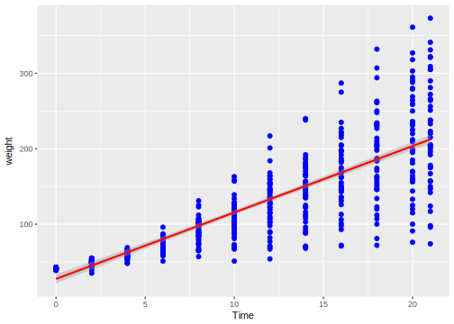
sp + geom_jitter(color = "blue") + stat_smooth(method = lm, se = TRUE, color = "red")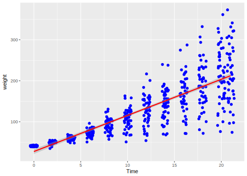
#그룹 별 회귀선 추가하기
sps <- ggplot(heightweight, aes(x = ageYear, y = heightIn, color = sex)) +
geom_point() + scale_color_brewer(palette = "Set1")## Error in ggplot(heightweight, aes(x = ageYear, y = heightIn, color = sex)): 객체 'heightweight'를 찾을 수 없습니다sps + geom_smooth()## Error in eval(expr, envir, enclos): 객체 'sps'를 찾을 수 없습니다# 예측값 실제값 그래프로 표현하기 (함수)
predictvals <- function(model, xvar, yvar, xrange = NULL, sample = 100, ...){
if(is.null(xrange)){
if(any(class(model) %in% c("lm", "glm")))
xrange <- range(model$model[[xvar]])
else if(any(class(model) %in% "loess"))
xrange <- range(model$x)
}
newdata <- data.frame(x = seq(xrange[1], xrange[2], length.out = sample))
names(newdata) <- xvar
newdata[[yvar]] <- predict(model, newdata = newdata, ...)
newdata
}
modlinear <- lm(heightIn ~ ageYear, heightweight)## Error in is.data.frame(data): 객체 'heightweight'를 찾을 수 없습니다modloess <- loess(heightIn ~ ageYear, heightweight)## Error in is.data.frame(data): 객체 'heightweight'를 찾을 수 없습니다lm_predicted <- predictvals(modlinear, "ageYear", "heightIn")## Error in class(model) %in% c("lm", "glm"): 객체 'modlinear'를 찾을 수 없습니다loess_predicted <- predictvals(modloess, "ageYear", "heightIn")## Error in class(model) %in% c("lm", "glm"): 객체 'modloess'를 찾을 수 없습니다sp <- ggplot(heightweight, aes(x = ageYear, y = heightIn)) +
geom_point(color = "grey40")## Error in ggplot(heightweight, aes(x = ageYear, y = heightIn)): 객체 'heightweight'를 찾을 수 없습니다sp + geom_line(data = lm_predicted, color = "red", size = 0.8) +
geom_line(data = loess_predicted, color = "blue", size = 0.8)## Error in fortify(data): 객체 'lm_predicted'를 찾을 수 없습니다#산점도의 점에 라벨 붙이기
sp <- ggplot(subset(countries, Year == 2009 & healthexp > 2000),
aes(x = healthexp, y = infmortality)) + geom_point()## Error in subset(countries, Year == 2009 & healthexp > 2000): 객체 'countries'를 찾을 수 없습니다# 특정 값에 특정 단어로 라벨 붙이기
sp + annotate("text", x = 4350, y = 5.4, label = "Canada") +
annotate("text", x = 7400, y = 6.8, label = "USA")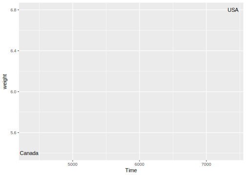
# 데이터 값을 라벨로 붙이기
sp + geom_text(aes(label = Name), size = 4)## Error in FUN(X[[i]], ...): 객체 'Name'를 찾을 수 없습니다# 라벨의 위치를 데이터값보다 조금 크게 설정
sp + geom_text(aes(y = infmortality + 0.1, label = Name), size = 4, vjust = 0)## Error in FUN(X[[i]], ...): 객체 'infmortality'를 찾을 수 없습니다sp + geom_text(aes(x = healthexp + 100, label = Name), size = 4, hjust = 0)## Error in FUN(X[[i]], ...): 객체 'healthexp'를 찾을 수 없습니다# 특정 값만 라벨 붙이기
cdat <- subset(countries, Year == 2009 & healthexp > 2000)## Error in subset(countries, Year == 2009 & healthexp > 2000): 객체 'countries'를 찾을 수 없습니다cdat$Name1 <- cdat$Name ## Error in eval(expr, envir, enclos): 객체 'cdat'를 찾을 수 없습니다idx <- cdat$Name %in% c("Andorra", "France", "Canada") ## Error in cdat$Name %in% c("Andorra", "France", "Canada"): 객체 'cdat'를 찾을 수 없습니다cdat$Name1[!idx] <- NA## Error in cdat$Name1[!idx] <- NA: 객체 'cdat'를 찾을 수 없습니다ggplot(cdat, aes(x = healthexp, y = infmortality)) + geom_point() + geom_text(aes(y = infmortality + 0.1, label = Name1), size = 4, vjust = 0)## Error in ggplot(cdat, aes(x = healthexp, y = infmortality)): 객체 'cdat'를 찾을 수 없습니다## Warning: Removed 24 rows containing missing values (geom_text).6.2 Part2
# 거품그래프(balloon plot)
hec <- HairEyeColor[,,"Male"] + HairEyeColor[,,"Female"]
hec <- melt(hec, value.name = "count")
ggplot(hec, aes(x = Eye, y = Hair)) + geom_point(aes(size = count), shape = 21, color = "black", fill = "cornsilk") +
scale_size_area(max_size = 20, guide = FALSE) +
geom_text(aes(y = as.numeric(Hair)-sqrt(count)/22, label = count), vjust = 1, color = "grey60", size = 4)
# 산점도 행렬 만들기
c2009 <- subset(countries, Year == 2009, select = c(Name, GDP, laborrate, healthexp, infmortality)) ## Error in subset(countries, Year == 2009, select = c(Name, GDP, laborrate, : 객체 'countries'를 찾을 수 없습니다plot(c2009[,2:5])## Error in plot(c2009[, 2:5]): 객체 'c2009'를 찾을 수 없습니다panel.hist <- function(x, ...)
{
usr <- par("usr"); on.exit(par(usr))
par(usr = c(usr[1:2], 0, 1.5) )
h <- hist(x, plot = FALSE)
breaks <- h$breaks; nB <- length(breaks)
y <- h$counts; y <- y/max(y)
rect(breaks[-nB], 0, breaks[-1], y, col = "cyan", ...)
}
panel.cor <- function(x, y, digits = 2, prefix = "", cex.cor, ...)
{
usr <- par("usr"); on.exit(par(usr))
par(usr = c(0, 1, 0, 1))
r <- abs(cor(x, y))
txt <- format(c(r, 0.123456789), digits = digits)[1]
txt <- paste0(prefix, txt)
if(missing(cex.cor)) cex.cor <- 0.8/strwidth(txt)
text(0.5, 0.5, txt, cex = cex.cor * r)
}
panel.lm <- function(x, y, col = par("col"), bg = NA, pch = par("pch"), cex = 1, col.smooth = "black", ...){
points(x, y, pch = pch, col = col, bg = bg, cex = cex)
abline(stats::lm(y ~ x), col = col.smooth, ...)
}
# 데이터에 대한 LOWESS선(평활선) 추가
pairs(c2009[,2:5], pch = ".", upper.panel = panel.cor, diag.panel = panel.hist, lower.panel = panel.lm)## Error in pairs(c2009[, 2:5], pch = ".", upper.panel = panel.cor, diag.panel = panel.hist, : 객체 'c2009'를 찾을 수 없습니다# 데이터에 대한 회귀적합선 추가
pairs(c2009[,2:5], pch = ".", upper.panel = panel.cor, diag.panel = panel.hist, lower.panel = panel.smooth)## Error in pairs(c2009[, 2:5], pch = ".", upper.panel = panel.cor, diag.panel = panel.hist, : 객체 'c2009'를 찾을 수 없습니다######################################################################################
## scatter + line plot (geom_point/ geom_line)
######################################################################################
plot(pressure$temperature, pressure$pressure, type = "l")
points(pressure$temperature, pressure$pressure)
qplot(temperature, pressure, data = pressure, geom = c("line", "point"))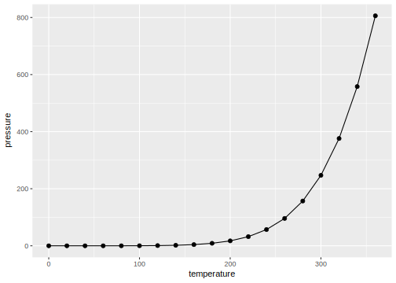
ggplot(pressure, aes(x = temperature, y = pressure)) + geom_point() + geom_line()
######################################################################################
## line plot (geom_line)
######################################################################################
ggplot(BOD, aes(x = Time, y = demand)) + geom_line() + ylim(0, max(BOD$demand))
ggplot(BOD, aes(x = Time, y = demand)) + geom_line() + expand_limits(y = 0)
ggplot(BOD, aes(x = Time, y = demand)) + geom_line() + geom_point()
# 이산형 변수값에 따른 구분
tg <- ddply(ToothGrowth, c("supp", "dose"), summarize, length = mean(len))
# 색상으로 구분
ggplot(tg, aes(x = dose, y = length, color = supp)) + geom_line()
ggplot(tg, aes(x = factor(dose), y = length, color = supp, group = supp)) + geom_line()
# group = supp 주의! : 이 명령문이 없으면 데이터를 어떻게 묶어서 그릴지 모름
# Line type으로 구분
ggplot(tg, aes(x = dose, y = length, linetype = supp)) + geom_line()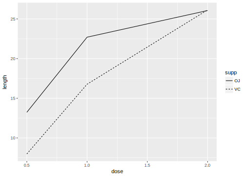
# 점 형태로 구분
ggplot(tg, aes(x = dose, y = length, shape = supp)) + geom_line() + geom_point(size = 4)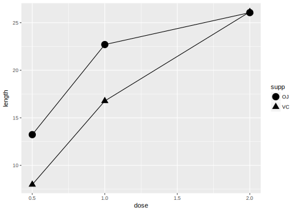
# 점 색상으로 구분
ggplot(tg, aes(x = dose, y = length, fill = supp)) + geom_line() + geom_point(size = 4, shape = 21)
# 두 선이 겹칠때 하나의 선을 옆으로 이동시켜 표현
ggplot(tg, aes(x = dose, y = length, shape = supp)) + geom_line(position = position_dodge(0.1)) +
geom_point(position = position_dodge(0.1), size = 4)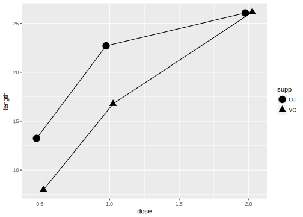
# 선 형태 바꾸기 [ linetype ]
ggplot(tg, aes(x = dose, y = length, color = supp)) + geom_line(linetype = "dashed") +
geom_point(shape = 22, size = 3, fill = "white")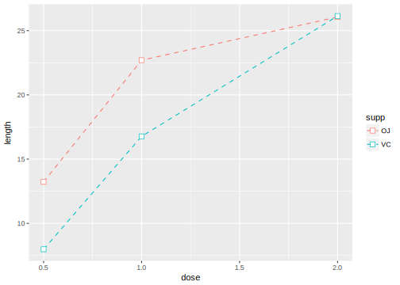
6.3 Part3
# 점 형태 바꾸기 [ shape ]
#################################
pd <- position_dodge(0.2) #
#################################
ggplot(tg, aes(x = dose, y = length, fill = supp)) + geom_line(position = pd) +
geom_point(shape = 21, size = 5, position = pd) +
scale_fill_manual(values = c("black", "white"))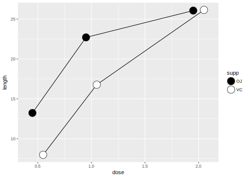
# sample Data
sunspotyear <- data.frame(Year = as.numeric(time(sunspot.year)),
Sunspots = as.numeric(sunspot.year))
# 음영 영역 그래프 그리기
ggplot(sunspotyear, aes(x = Year, y = Sunspots)) + geom_area()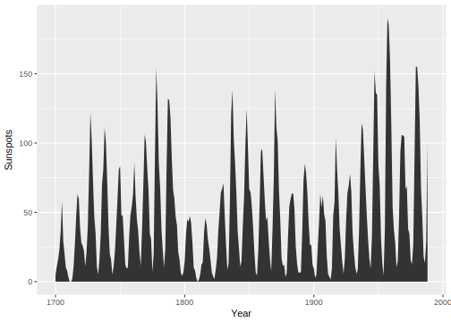
# 음영 투명도 설정하기 [ alpha ]
ggplot(sunspotyear, aes(x = Year, y = Sunspots)) + geom_area(color = "black", fill = "blue", alpha = 0.5)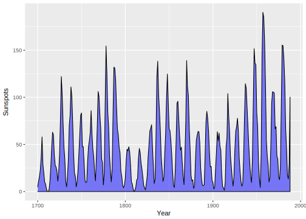
# 누적 영역 그래프 그리기
ggplot(uspopage, aes(x = Year, y = Thousands, fill = AgeGroup)) + geom_area()## Error in ggplot(uspopage, aes(x = Year, y = Thousands, fill = AgeGroup)): 객체 'uspopage'를 찾을 수 없습니다# 영역색상 그라데이션 넣기
ggplot(uspopage, aes(x = Year, y = Thousands, fill = AgeGroup)) + geom_area(color = "black", size = 0.2, alpha = 0.4) +
scale_fill_brewer(palette = "Blues", breaks = rev(levels(uspopage$AgeGroup)))## Error in ggplot(uspopage, aes(x = Year, y = Thousands, fill = AgeGroup)): 객체 'uspopage'를 찾을 수 없습니다# 데이터 순서정렬하기 & 양쪽 테두리 지우기
ggplot(uspopage, aes(x = Year, y = Thousands, fill = AgeGroup, order = desc(AgeGroup))) +
geom_area(color = NA, alpha = 0.4) + scale_fill_brewer(palette = "Blues") + geom_line(position = "stack", size = 0.2)## Error in ggplot(uspopage, aes(x = Year, y = Thousands, fill = AgeGroup, : 객체 'uspopage'를 찾을 수 없습니다# 비율 누적 영역 그래프 그리기
uspopage_prop <- ddply(uspopage, "Year", transform, Percent = Thousands / sum(Thousands) * 100) ## Error in empty(.data): 객체 'uspopage'를 찾을 수 없습니다ggplot(uspopage_prop, aes(x = Year, y = Percent, fill = AgeGroup)) + geom_area(color = "black", size = 0.2, alpha = 0.4) +
scale_fill_brewer(palette = "Blues", breaks = rev(levels(uspopage$AgeGroup)))## Error in ggplot(uspopage_prop, aes(x = Year, y = Percent, fill = AgeGroup)): 객체 'uspopage_prop'를 찾을 수 없습니다# 그래프에 신뢰 영역 추가하기
clim <- subset(climate, Source == "Berkeley", select = c("Year", "Anomaly10y", "Unc10y"))## Error in subset(climate, Source == "Berkeley", select = c("Year", "Anomaly10y", : 객체 'climate'를 찾을 수 없습니다# 신뢰영역 음영으로 표현
ggplot(clim, aes(x = Year, y = Anomaly10y)) +
geom_ribbon(aes(ymin = Anomaly10y - Unc10y, ymax = Anomaly10y + Unc10y), alpha = 0.2) +
geom_line()## Error in ggplot(clim, aes(x = Year, y = Anomaly10y)): 객체 'clim'를 찾을 수 없습니다# 신뢰영역 점선으로 표현
ggplot(clim, aes(x = Year, y = Anomaly10y)) +
geom_line(aes(y = Anomaly10y - Unc10y), linetype = "dotted") +
geom_line(aes(y = Anomaly10y + Unc10y), linetype = "dotted") +
geom_line()## Error in ggplot(clim, aes(x = Year, y = Anomaly10y)): 객체 'clim'를 찾을 수 없습니다#
######################################################################################
## barplot (geom_bar)
######################################################################################
barplot(BOD$demand, names.arg = BOD$Time)
barplot(table(mtcars$cyl))
# x값을 숫자로 인식
# qplot(BOD$Time, BOD$demand, geom = "bar", stat = "identity")
ggplot(BOD, aes(x = Time, y = demand)) + geom_bar(stat = "identity")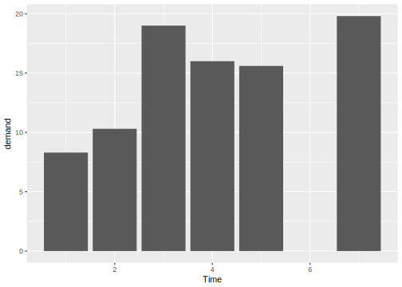
# x값을 요인으로 변환
# qplot(as.factor(BOD$Time), BOD$demand, geom = "bar", stat = "identity")
ggplot(BOD, aes(x = factor(Time), y = demand)) + geom_bar(stat = "identity")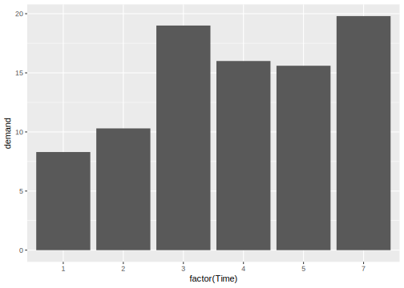
# 막대 색상 채우기/테두리 설정하기 (fill : 채우기/ colour(or color) : 테두리)
ggplot(pg_mean, aes(x = group, y = weight)) + geom_bar(stat = "identity", fill = "lightblue", colour = "black")## Error in ggplot(pg_mean, aes(x = group, y = weight)): 객체 'pg_mean'를 찾을 수 없습니다# 막대 묶어서 표현하기(나누어 표현하고 싶은 변수를 색상으로 지정)
ggplot(cabbage_exp, aes(x = Date, y = Weight, fill = Cultivar)) + geom_bar(stat = "identity", position = "dodge")## Error in ggplot(cabbage_exp, aes(x = Date, y = Weight, fill = Cultivar)): 객체 'cabbage_exp'를 찾을 수 없습니다# dodge : "피하다"라는 의미로 막대를 새로운 값을 기준으로 나누어 표현
ggplot(cabbage_exp, aes(x = Date, y = Weight, fill = Cultivar)) + geom_bar(stat = "identity", position = "dodge", color = "black") +
scale_fill_brewer(palette = "Pastel1")## Error in ggplot(cabbage_exp, aes(x = Date, y = Weight, fill = Cultivar)): 객체 'cabbage_exp'를 찾을 수 없습니다6.4 Part4
# 빈도수 막대 그래프 그리기
# x가 이산형
ggplot(diamonds, aes(x = cut)) + geom_bar()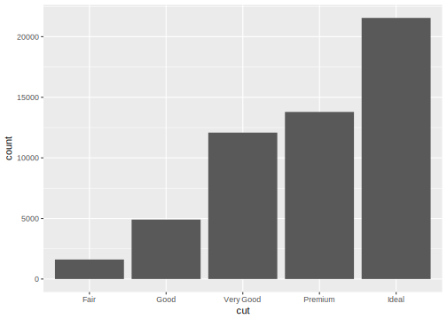
# x가 연속형
ggplot(diamonds, aes(x = carat)) + geom_bar()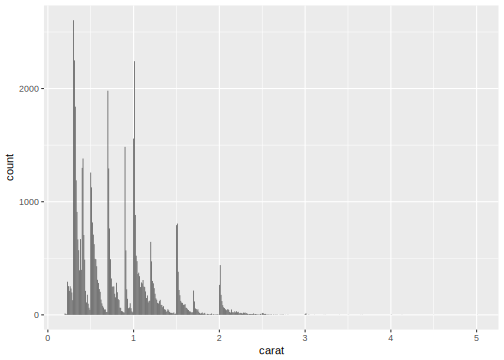
# 막대 색상 넣기/ 축 이름 정의하기(reorder)
upc <- subset(uspopchange, rank(Change) > 40)## Error in subset(uspopchange, rank(Change) > 40): 객체 'uspopchange'를 찾을 수 없습니다ggplot(upc, aes(x = reorder(Abb, Change), y = Change, fill = Region)) + geom_bar(stat = "identity", color = "black") +
scale_fill_manual(values = c("#669933", "#FFCC66")) + xlab("State")## Error in ggplot(upc, aes(x = reorder(Abb, Change), y = Change, fill = Region)): 객체 'upc'를 찾을 수 없습니다# 양수/음수 다른 색상으로 표현 (구분 inde를 만들어 색상 변수로 지정)
csub <- subset(climate, Source == "Berkeley" & Year >= 1900 )## Error in subset(climate, Source == "Berkeley" & Year >= 1900): 객체 'climate'를 찾을 수 없습니다csub$pos <- csub$Anomaly10y >= 0## Error in eval(expr, envir, enclos): 객체 'csub'를 찾을 수 없습니다ggplot(csub, aes(x = Year, y = Anomaly10y, fill = pos)) + geom_bar(stat = "identity", position = "identity")## Error in ggplot(csub, aes(x = Year, y = Anomaly10y, fill = pos)): 객체 'csub'를 찾을 수 없습니다# 막대 그래프 테두리 두께 설정(size) / 범례 지우기(guide = FALSE)
ggplot(csub, aes(x = Year, y = Anomaly10y, fill = pos)) + geom_bar(stat = "identity", position = "identity", color = "black", size = 0.0001) +
scale_fill_manual(values = c("#CCEEFF", "#FFDDDD"), guide = FALSE)## Error in ggplot(csub, aes(x = Year, y = Anomaly10y, fill = pos)): 객체 'csub'를 찾을 수 없습니다# 막대 너비/ 간격 조절하기(width : 최대 너비는 1)
ggplot(pg_mean, aes(x = group, y = weight)) + geom_bar(stat = "identity", width = 0.5)## Error in ggplot(pg_mean, aes(x = group, y = weight)): 객체 'pg_mean'를 찾을 수 없습니다# 막대 그룹 간의 간격 조절하기 (default : 0.9)
ggplot(cabbage_exp, aes(x = Date, y = Weight, fill = Cultivar)) + geom_bar(stat = "identity", width = 0.4, position = "dodge")## Error in ggplot(cabbage_exp, aes(x = Date, y = Weight, fill = Cultivar)): 객체 'cabbage_exp'를 찾을 수 없습니다# 막대 그룹 내부간의 간격 조절 (default : 0.9)
ggplot(cabbage_exp, aes(x = Date, y = Weight, fill = Cultivar)) + geom_bar(stat = "identity", width = 0.3, position = position_dodge(0.5))## Error in ggplot(cabbage_exp, aes(x = Date, y = Weight, fill = Cultivar)): 객체 'cabbage_exp'를 찾을 수 없습니다# 범례 순서 바꾸기 (reverse = TRUE)
ggplot(cabbage_exp, aes(x = Date, y = Weight, fill = Cultivar)) + geom_bar(stat = "identity") + guides(fill = guide_legend(reverse = TRUE))## Error in ggplot(cabbage_exp, aes(x = Date, y = Weight, fill = Cultivar)): 객체 'cabbage_exp'를 찾을 수 없습니다# 막대 쌓는 순서 바꾸기
ggplot(cabbage_exp, aes(x = Date, y = Weight, fill = Cultivar, order = desc(Cultivar))) + geom_bar(stat = "identity")## Error in ggplot(cabbage_exp, aes(x = Date, y = Weight, fill = Cultivar, : 객체 'cabbage_exp'를 찾을 수 없습니다# 비율 누적 막대 그래프 그리기(막대 전체가 100%가 되도록)
ce <- ddply(cabbage_exp, "Date", transform, percent_weight = Weight / sum(Weight) * 100)## Error in empty(.data): 객체 'cabbage_exp'를 찾을 수 없습니다ggplot(ce, aes(x = Date, y = percent_weight, fill = Cultivar)) + geom_bar(stat = "identity")## Error in ggplot(ce, aes(x = Date, y = percent_weight, fill = Cultivar)): 객체 'ce'를 찾을 수 없습니다# 막대에 라벨 추가하기 [ geom_text ]
# 선 상단 [ vjust < 0 ]
ggplot(cabbage_exp, aes(x = interaction(Date, Cultivar), y = Weight)) + geom_bar(stat = "identity") +
geom_text(aes(label = Weight), vjust = -0.2)## Error in ggplot(cabbage_exp, aes(x = interaction(Date, Cultivar), y = Weight)): 객체 'cabbage_exp'를 찾을 수 없습니다# 선 하단 [ vjust > 0 ]
ggplot(cabbage_exp, aes(x = interaction(Date, Cultivar), y = Weight)) + geom_bar(stat = "identity") +
geom_text(aes(label = Weight), vjust = 1.5, color = "white")## Error in ggplot(cabbage_exp, aes(x = interaction(Date, Cultivar), y = Weight)): 객체 'cabbage_exp'를 찾을 수 없습니다# 그래프 범위 설정
# max(데이터)로 지정
ggplot(cabbage_exp, aes(x = interaction(Date, Cultivar), y = Weight)) + geom_bar(stat = "identity") +
geom_text(aes(label = Weight), vjust = -0.2) + ylim(0, max(cabbage_exp$Weight) * 1.05)## Error in ggplot(cabbage_exp, aes(x = interaction(Date, Cultivar), y = Weight)): 객체 'cabbage_exp'를 찾을 수 없습니다# 막대의 상단보다 조금 높은 위치로 지정(데이터에 따라 자동 조정)
ggplot(cabbage_exp, aes(x = interaction(Date, Cultivar), y = Weight)) + geom_bar(stat = "identity") +
geom_text(aes(y = Weight + 0.1, label = Weight)) ## Error in ggplot(cabbage_exp, aes(x = interaction(Date, Cultivar), y = Weight)): 객체 'cabbage_exp'를 찾을 수 없습니다# 누적 합계 그래프 그리기
ce <- arrange(cabbage_exp, Date, Cultivar)## Error in is.data.frame(df): 객체 'cabbage_exp'를 찾을 수 없습니다ce <- ddply(ce, "Date", transform, label = cumsum(Weight))## Error in empty(.data): 객체 'ce'를 찾을 수 없습니다# ddply(data.frame, 그룹 기준 마지막 변수)
ggplot(ce, aes(x = Date, y = Weight, fill = Cultivar)) + geom_bar(stat = "identity", color = "black") +
geom_text(aes(y = label, label = paste(format(Weight, nsmall=2), "kg")), size = 6, vjust = 1.5) +
guides(fill = guide_legend(reverse = TRUE)) + scale_fill_brewer(palette = "Pastel1")## Error in ggplot(ce, aes(x = Date, y = Weight, fill = Cultivar)): 객체 'ce'를 찾을 수 없습니다######################################################################################
## histogram (geom_histogram)
######################################################################################
hist(mtcars$mpg)
# 상자(bin) 개수 지정
hist(mtcars$mpg, breaks = 10)
qplot(mpg, data = mtcars, binwidth = 4)
# ggplot(mtcars, aes(x = mpg)) + geom_histogram()
ggplot(mtcars, aes(x = mpg)) + geom_histogram(binwidth = 4)
h <- ggplot(faithful, aes(x = waiting))
h + geom_histogram(binwidth = 8, fill = "white", color = "black", origin = 31)## Warning: `origin` is deprecated. Please use `boundary`
## instead.
## Warning: `origin` is deprecated. Please use `boundary` instead.
# 그룹화된 데이터로 여러개의 히스토그램 만들기
library(MASS)##
## Attaching package: 'MASS'## The following object is masked _by_ '.GlobalEnv':
##
## area## The following object is masked from 'package:dplyr':
##
## selectggplot(birthwt, aes(x = bwt)) + geom_histogram(fill = "white", color = "black") + facet_grid(smoke ~ .)## `stat_bin()` using `bins = 30`. Pick better value
## with `binwidth`.
## `stat_bin()` using `bins = 30`. Pick better value with `binwidth`.
ggplot(birthwt, aes(x = bwt)) + geom_histogram(fill = "white", color = "black") + facet_grid(smoke ~ .)## `stat_bin()` using `bins = 30`. Pick better value
## with `binwidth`.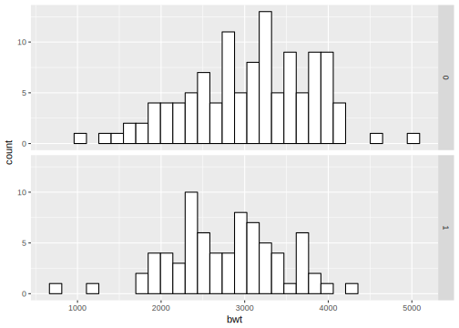
## `stat_bin()` using `bins = 30`. Pick better value with `binwidth`.
# 그룹 라벨 정의
birthwt1 <- birthwt
birthwt1$smoke <- factor(birthwt1$smoke)
levels(birthwt1$smoke)## [1] "0" "1"## [1] "0" "1"
birthwt$smoke <- revalue(birthwt1$smoke, c("0" = "Nosmoke", "1" = "Smoke"))
ggplot(birthwt, aes(x = bwt)) + geom_histogram(fill = "white", color = "black") + facet_grid(smoke ~ ., scales = "free")## `stat_bin()` using `bins = 30`. Pick better value
## with `binwidth`.
## `stat_bin()` using `bins = 30`. Pick better value with `binwidth`.
######################################################################################
## boxplot (geom_boxplot)
######################################################################################
boxplot(len ~ supp, data = ToothGrowth)
qplot(ToothGrowth$supp, ToothGrowth$len, geom = "boxplot")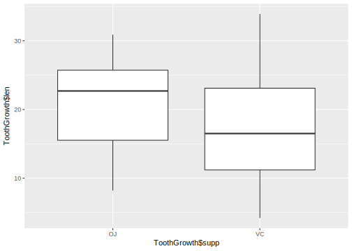
ggplot(ToothGrowth, aes(x = supp, y = len))+ geom_boxplot()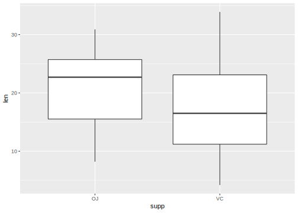
# 두 변수의 상호작용을 X축으로
boxplot(len ~ supp + dose, data = ToothGrowth)
qplot(interaction(ToothGrowth$supp, ToothGrowth$dose), ToothGrowth$len, geom = "boxplot")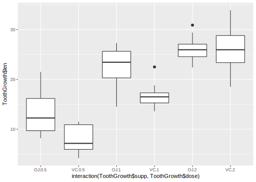
ggplot(ToothGrowth, aes(x = interaction(supp, dose), y = len)) + geom_boxplot()
######################################################################################
## 함수곡선 그리기 (stat_function)
######################################################################################
# 사용자함수 정의
myfun <- function(xvar){
1/(1 + exp(-xvar + 10))
}
curve(myfun(x), from = 0, to = 20)
curve(1-myfun(x), add = TRUE, col = "red")
# qplot(c(0,20), fun = myfun, stat = "function", geom = "line")
ggplot(data.frame(x = c(0,20)), aes(x =x)) + stat_function(fun = myfun, geom = "line")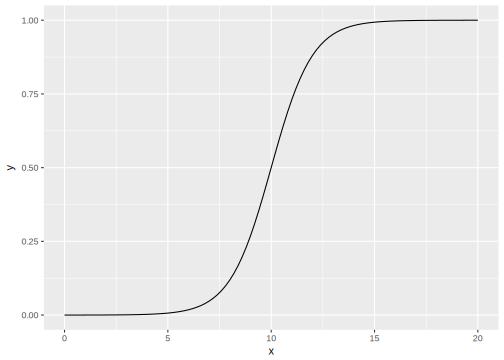
# r if (knitr:::is_html_output()) '# Assignments'
References
Wickham, Hadley, and Winston Chang. 2016. Ggplot2: Create Elegant Data Visualisations Using the Grammar of Graphics. https://CRAN.R-project.org/package=ggplot2.